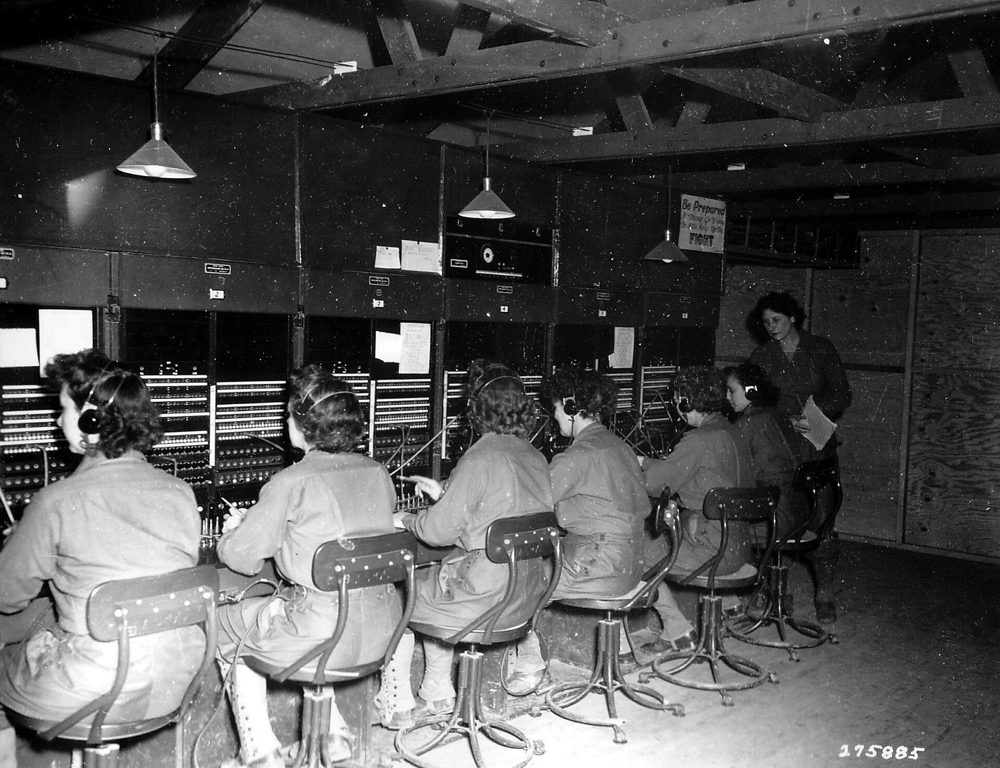
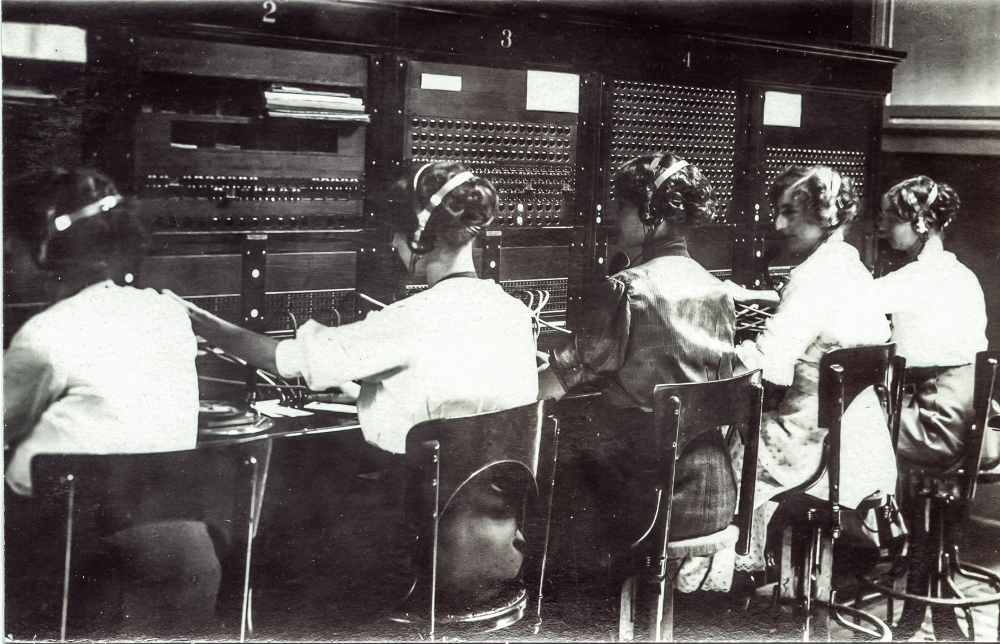
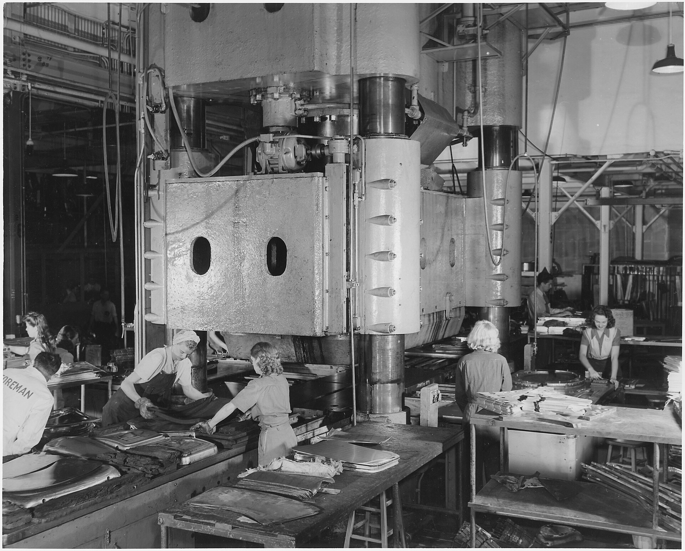

More hands to make it happen.
More ways to grow. We build and deploy custom agents tailored to your team’s workflows and business outcomes.
Now your tickets can close themselves.
Code Runs has three modes. Press run and take the second one yourself.
Retry failed exports
Waiting to start
The three modes and their descriptions are Janet's, from their Code Runs post of June 22, 2026. The ticket, the plan and the question are invented for this demo.
Good work starts with context.
The conversation. The customer history. The detail in a document. Janet connects what your company knows and carries it into the next workflow.

More momentum. Still your call.
Let routine work run. Stay close to the decisions that need you. Your custom dashboard puts progress, results, and approvals in one place.

Your next chapter starts with a conversation.
- Day 0Start with your goalsWe choose the workflows that matter to your business.
- Days 1–7Meet your JanetWe connect your tools and build your agent and dashboard.
- Days 8–45Make it your ownWeekly check-ins help us refine the work with your team.
- Day 46 onwardsKeep moving forwardJanet works around the clock. Our team stays close.

No more checking in about details you already discussed.
Janet's own words for what Code Runs gives you: 24/7 autonomous context capture, automatic planning of ticket resolutions, and your JanetClaw understanding your preferences and judgement before handling coding tasks on its own.

Tell us the workflow you wish ran itself, and we will start from there.